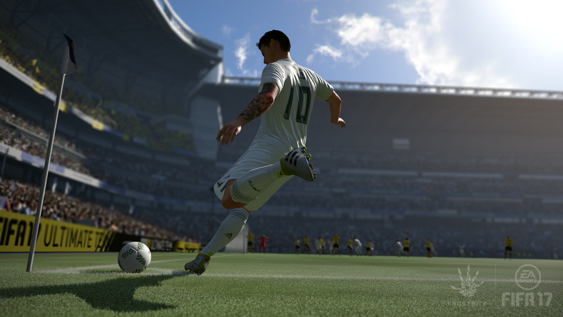
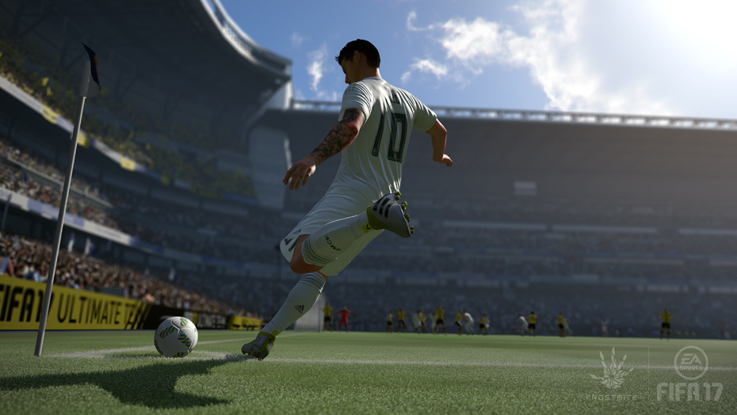

FIFA 17’s headline feature is The Journey, a story about a prodigious young talent attempting to make a name for himself in the Premier League. It’s a microcosm of everything that’s good and bad about FIFA – peerless presentation surrounding a match engine that’s an improvement on last year, but still needs work – and yet it’s the most fun I’ve had with the series for a good few seasons. Perhaps more importantly, it’s a welcome reminder of the personal stories at the heart of a sport (and a series) that, in recent times, has felt more concerned with its corporate identity. It’s not easy to find ways to surprise people in an annualised game, but this is a very pleasant one.
The story of likeable 17-year-old Alex Hunter and his rise from unvarnished academy product to bright young starlet follows a conventional path – not quite rags to riches, but close – though it’s affectingly told, even if FIFA 17’s PEGI rating ensures that it’s a rather airbrushed take on the modern game. Still, the setbacks and insults sting – on his debut as a substitute the opposition fans taunt him with a chant of “who are ya?” while you’ll attract social media criticism from supporters and fellow professionals (at one stage, an embittered ex-teammate hashtags you as a #benchwarmer). Naturally, this only made me all the more determined to succeed.
As someone who has been horrified by the steady marginalisation of this great football institution, Hunter’s passion for the FA Cup (driven by a family legacy, as per sports movie tradition) struck a powerful chord with me, and I shared his frustration at being considered too young to feature in a blood-and-thunder cup tie. When Swansea, my chosen team, finally gave him his chance, I was determined that Hunter (and I) would take it – and we did. As he slotted in his third goal the crowd began chanting his name before launching into a full-throated version of Hymns and Arias, and I’m not too proud to say I got a little choked up.
It’s sentimental, but appropriately so – football fans seem especially prone to outbursts of emotion, from full-blown weeping at relegations to misty-eyed reminiscences of “the good old days”. The Journey also represents the fripperies of the modern game well, as you’d expect – from post-match interviews with dialogue responses that can affect your standing with your manager, teammates, and supporters, to a choice of branded boots for your first sponsorship deal. If the excessive branding is a bit of a turn-off, it’s also quite authentic. Otherwise, The Journey is surprisingly down to earth. Hunter’s more impressed by his achievements on the pitch than what they earn him off it, and there’s a particularly lovely moment where he gets his first full start and experiences a sudden rush of nervous pride at the realisation that he’s going to kick off the game. Aided by a terrific Atticus Ross score, which is emotive without feeling manipulative, The Journey follows its familiar storyline with real conviction.
t functions quite beautifully as a tutorial, too. Though it might seem unlikely to have a striker so regularly tasked with defensive drills, by covering all facets of the game you become a better player along with Hunter. You can simulate the sessions if you want to skip them, but if you do you’re less likely to improve and you’ll usually be awarded a lower grade – which might not help if you need to impress the manager after a 6/10 display in the previous game. It’s a valuable message for any youngsters playing the game, espousing the need for hard work to succeed. Hunter might eventually boast a lavish city-centre apartment when he finally hits the big time, but I felt like he’d really earned it.
It’s worth pointing out that while you can contribute to Hunter’s journey, your progress is bound to the needs of the story. In the early stages, I regularly fulfilled the manager’s expectations even during limited substitute appearances, but I still found myself watching the game from the bench and eventually being shipped out on loan. Sometimes, the demands for bonus achievements are entirely unreasonable – trailing 3-0 to Man City with less than half an hour left, I was somehow expected to achieve five shots on target and come away with at least a draw.
That’s particularly difficult given the ability of your AI opponents to retain possession for several minutes at a time thanks to changes to FIFA’s physics making it easier to shield the ball. When I earned a place as a regular starter, in the vast majority of games I’d have less than 40% possession; that makes it realistically tough to make a name for yourself in one sense, but even if you make the most of your few chances it’s still frustrating to see so little of the ball. It perhaps says something that you’re given the option to play as a team rather than just controlling Hunter – and after a few games playing that way I felt much more involved and less irritated by teammates’ errors. There’s nothing worse than being penalised for a ‘bad call for a pass’ when the pass itself was inaccurate.
The grading is questionable elsewhere, too. While jostling with a defender, I found myself losing points for apparently conceding possession three times, but wasn’t rewarded for regaining it as I finally sprinted clear. Perfectly good shots that are well blocked by smart defending are classed as ‘poor’. During one narrow victory, I quite deliberately played the ball off a defender to earn a corner and relieve some of the pressure my team had been under; the manager’s comments after the game chided me for conceding possession.
EA Sports attempts to take the sting out of that by having AI players occasionally make glaring mistakes, but the result is that the quality of the opposition veers from Barcelona to Barnet and back again in the space of a minute. They might be difficult to win possession from, but they’re often easy to exploit with more direct play. In one game, I won 3-0 with 32% possession, having watched my opponent play keep-ball in midfield for the final 20 minutes. Tellingly, I found commentator Martin Tyler repeat his assertion that you don’t need to dominate the ball to win a game after every other game I played.
But while FIFA still doesn’t do enough to distinguish the playstyle of individual teams, there are some signs of improvement over last year’s game. For example, I noticed a particular difference in style when playing Leicester City: they took more risks, moved the ball quicker, and played more direct football, making for much more exciting, dynamic matches. In one thrilling moment, as Jamie Vardy hared past my back line, I brought a defender across, putting him under just enough pressure to force him to rush his shot, which whistled over the crossbar. It’s the most authentic FIFA has felt to me in quite a while.
Pace, having been nerfed last year, is back to being slightly overpowered, though with PES arguably taking it a shade too far the other way it’s refreshing to have the ability to outsprint full-backs. For all that extra burst of speed, though, I found responsiveness to still be an issue – it’s anyone’s guess whether you’ll manage to get a shot away before a defender closes in. Tweaks have been made to off-the-ball runs but the execution is uneven – teammates will try to move into more intelligent positions to receive the ball, but at times this means running directly across you. The player-selection algorithm also needs work, and flat passing can be bizarrely wayward – more than once, I’ve watched in dismay as a short five-yard pass has been interpreted as a command to hoof the ball out of play. Crosses, meanwhile, sometimes feel more like underarm throws into the box, with the inevitable interception greeted almost every time with the same line from Tyler: “Well, the ball deserved perhaps a better response from his teammates in the middle.
For all the adjustments and additions that don’t quite work, you can hardly accuse EA Sports of not trying. Some might argue that the new systems for set-pieces and penalties are changes for change’s sake. But while I did wonder if having to adjust your position in the run-up to penalties might be a needless complication of what should be a simple process, I’m sure plenty will appreciate the greater nuance – and, admittedly, it does add to the pressure. All told, there’s still plenty of room for improvement, but the on-pitch action is an advance on last year.
And if the new Frostbite engine hasn’t had a tangible effect on the way FIFA plays, it certainly has on the way it looks. The broad, round-shouldered players of last year are gone, replaced by models that look much more like actual human beings. With better likenesses, including all 20 Premier League managers, in visual terms FIFA 17 is a clear step ahead of its biggest rival.
Elsewhere, there’s such a sprawl of modes and features that it’s impossible to cover them all in detail - suffice to say that FIFA gets more comprehensive and overwhelming every year. Themed challenges are your main incentive to keep coming back to the ever compulsive Ultimate Team mode, with new ones set to be introduced over the course of the football season. There’s a new FUT Champions mode, too, which tasks you with scoring enough points to qualify for a weekend league, success in which can earn you in-game prizes. Career mode, meanwhile, offers more comprehensive club management options while letting you create an avatar for your manager so you can prowl the touchline and respond to events on the field.


 
